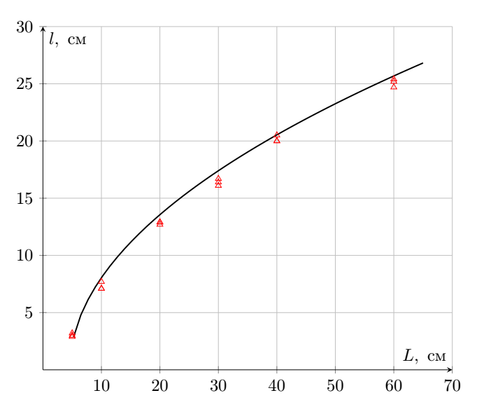
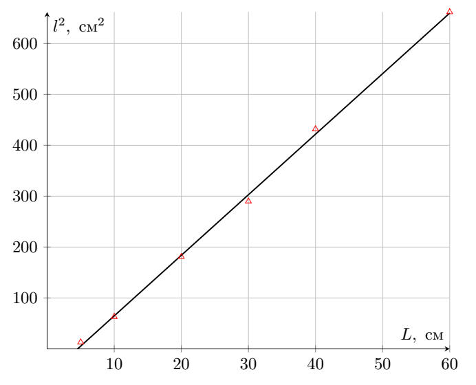
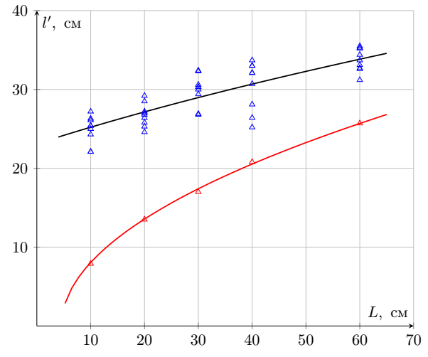
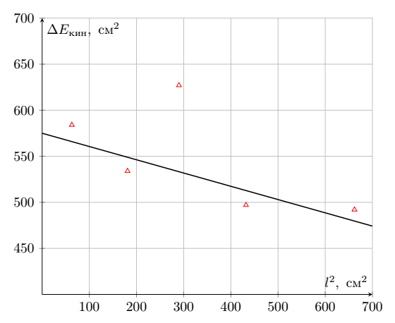
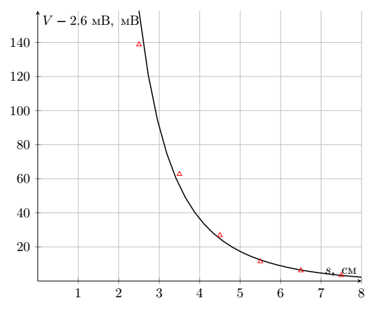
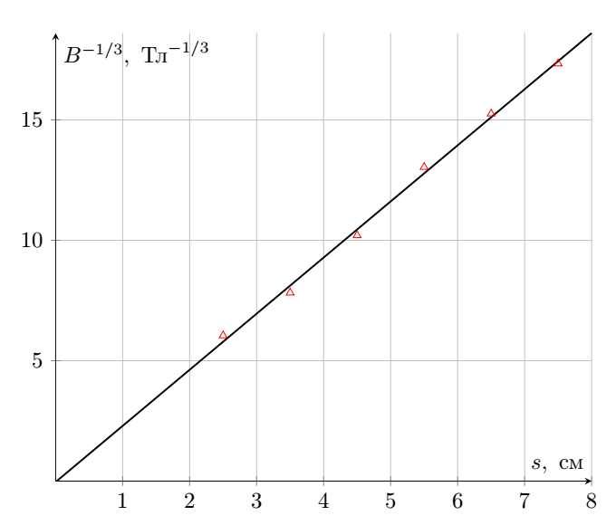
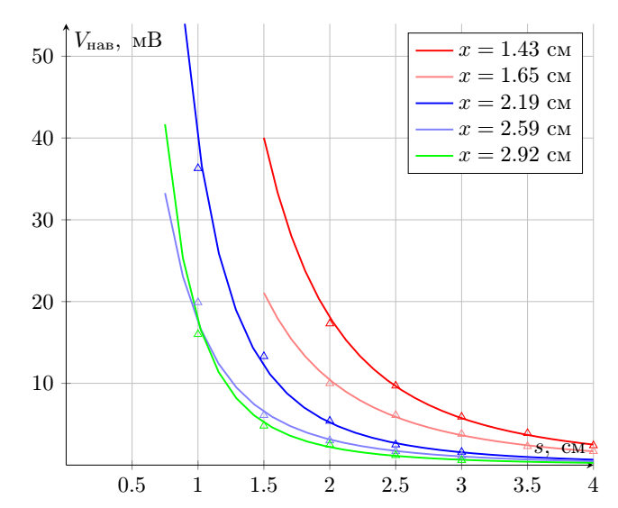
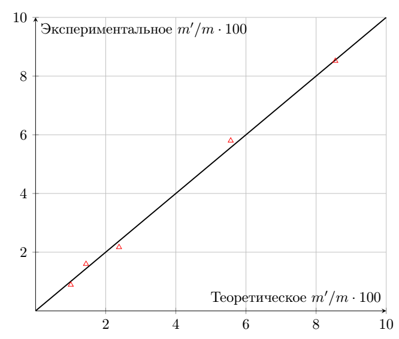

Gauss gun --- Solution
X25 (2025) — English translation
*Attention! If your steel ball rolls under someone else's table, then it is forbidden to take it out! Spare balls and magnets are not issued! Marking ANY kind of mark on an aluminum gutter will result in a penalty point. Losing ANY equipment other than balls or a magnet will result in a penalty point. Intentionally changing the angle of an aluminum gutter will disqualify you.-2.00
Marking ANY kind of mark on an aluminum gutter will result in a penalty point. Losing ANY equipment other than balls or a magnet will result in a penalty point.
Intentionally changing the angle of an aluminum gutter will disqualify you.
A1Specify the value $h$. Determine the installation angle $\alpha .$0.10
Let's measure the height of the lower horizontal part of the gutter $h=24.9~cm$. Let's measure the height of the top point $h+\Delta h = 50.7~cm$. In this case, the length of the long part of the gutter is $L=80.0~cm$. Using the fact that $\sin \alpha = \Delta h/L$ we find the angle $\alpha$
Answer: \[h = 24.9~cm \quad \alpha = 18.8^\circ\]
A2Measure the dependence of the flight range $l$ on the length of the inclined section of the ball path $L$ in the range from $0$ to $70$ cm for 5 values $L$. Repeat each measurement at least $3$ times. All measurements $l$ must be taken using ball drop marks on A3 sheets. A3 sheets are required to be handed in at the end of the work.1.00
Answer: $L,~cm$ $l_1,~cm$ $l_2,~cm$ $l_3,~cm$ $\langle l \rangle, cm$ 10.0 7.1 7.1 7.7 7.8 20.0 12.7 12.9 12.9 13.3 30.0 16.1 16.4 16.7 16.9 40.0 20.0 20.0 20.5 20.7 60.0 24.7 25.2 25.4 25.6

A3Obtain a theoretical expression relating the quantities $l$ and $L$. Assume that the ball moves along the chute all the time without slipping; the angle between the generatrices of the chute is straight. Express your answer using $h, \alpha, \gamma, l, L$0.40
Kinetic energy of the ball taking into account the rotational energy: \[ K=\frac{Mv^2}{2} + \frac{I \omega^2}{2},\]where $I=\frac{2}{5}MR^2$. The speed of the ball points that touch the corner must be zero, so $\omega R/\sqrt{2}=v$. As a result, on the inclined section of the chute, the ESE has the form \[ K = \Delta \Pi \quad \Rightarrow \quad \frac{9 M v^2}{10} = MgL \sin \alpha\]After passing the corner of the chute, $\gamma K$ of energy is lost, so the ball flies out of the corner with a horizontal speed $u$ such that \[ u^2= \frac{10}{9} (1- \gamma) g L \sin \alpha \]The ball, under the influence of gravity acceleration, overcomes the height $h$ in time $t = \sqrt{2h/g}$, and therefore \[ l^2 = u^2t^2 = \frac{20}{9} (1- \gamma) Lh \sin \alpha \]
A4Using the result of the previous paragraph, construct a graph of $l$ versus $L$ in coordinates in which it will be linear.0.60

A5Find the slope coefficient of the graph constructed in the previous paragraph. Determine the loss factor $\gamma$.0.20
The graph in axes $l^2$ from $L$ turns out to be linear with a slope coefficient \[k_\textbf{A4}=\frac{20}{9}(1-\gamma) h \sin \alpha=11.9~cm\]The coefficient $\gamma$ can vary quite a lot from corner to corner.
Answer: \[ \gamma = 1 - \frac{9k_\textbf{A4}}{20 h \sin \alpha} = 0.36\]
B1Measure the dependence of the flight range $l'$ of the emitted ball on the length of the inclined section of the path of the incoming ball $L$. Take measurements for the same values of quantity $L$ that you used in Part A. For each value of $L$, take at least 5 measurements of quantity $l'$. All measurements $l$ must be taken using marks from the fall of the ball on A3 sheets.2.00
All measurements $l$ must be taken using marks from the fall of the ball on A3 sheets.
Answer: $L,~cm$ $\langle l' \rangle,~cm$ 10.0 25.4 20.0 26.8 30.0 30.3 40.0 30.5 60.0 34.0

B2Obtain an expression for the dependence $E_{kin}(l)$.0.30
From the kinematics described above, we remove the rotational motion \[ E_{kin} = \frac{Mu^2}{2}= \frac{Mgl^2}{4h} \]
Answer: \[ E_{kin} = \frac{Mgl^2}{4h} \]
B3Using the results of steps A2 and B1, calculate the addition $\Delta E_{kin}$ to the kinetic energy of the projectile translational motion obtained during interaction with the gun, for each experimental value. Calculate the energy using the formula obtained in the previous paragraph, discarding constant factors in front of the function of $l$.0.40
\[ \Delta E_{kin} = l'^2 - l^2 \]
Answer: $L,~cm$ $\Delta E_{kin},~cm^2$ $\Delta E_{kin},~\mathrm{mJ}$ 10.0 584 2.36 20.0 534 2.16 30.0 627 2.53 40.0 497 2.00 60.0 492 1.99
B4Plot a graph of $\Delta E_{kin}$ versus $l$ in coordinates in which it is linear.0.40
Energy ratio: \[E_{kin}' = (E_{kin} + W_1) (1- \beta) +W_2,\]therefore \[ \Delta E_{kin} = - \beta l^2 + W_1 (1 - \beta) + W_2\]and the graph must be plotted in coordinates $\Delta E_{kin}$ from $l^2$

B5Using the graph from point B4, determine the value of $\beta$, as well as the maximum possible addition to the kinetic energy $\Delta E_\mathrm{max}$ observed in the experiment.0.20
The slope of the graph is $k_\textbf{B4}=\beta$, and the intercept is $\Delta E_\max$.
Answer: \[\beta = 0.15, \quad \Delta E_{kin}=580~cm^2=2.3~\mathrm{mJ}\]
C1Using a Hall sensor, measure the magnet field for 5 values of $s$.0.30
Answer: $s,~cm$ $V+2,6~\mathrm{mV},~\mathrm{mV}$ 2.5 138.8 3.5 62.7 4.5 26.8 5.5 11.5 6.5 6.2 7.5 3.4

C2Give the dimensions of $m$ and $M$ in SI units.0.10
Answer: $$[m] = A \cdot \mathrm{m}^2$$$$[M] = A \cdot \mathrm{m}^{-1}$$
C3Obtain the theoretical form of the dependence $B(s)$. Express the answer through the quantities $\mu_0, m, s$, where $m$ is the magnetic moment of the issued ball magnet. Specify the direction of the magnetic field at the point where the sensor is located.0.30
Magnetic dipole field: $$\vec{B} = \frac{\mu_0}{4\pi}\left(\cfrac{3(\vec{m}\vec{r})\vec{r}}{r^5} - \cfrac{\vec{m}}{r^3}\right)$$in projection on axis, direct along дипольного moment $\vec{m}$: $$B(s) = \frac{\mu_0}{4\pi}\cdot \cfrac{2m}{s^3}$$
Answer: $$B(s) = \frac{\mu_0}{4\pi}\cdot \cfrac{2m}{s^3}$$Direction - along magnetic moment $\vec{m}$.
С4Using the results of the previous two paragraphs, construct a graph of the dependence $B(s)$ in coordinates in which it will be linear. Determine the magnetization value of the magnet $M$.0.60
We build the graph in coordinates $B^{-1/3}$ from $s$, where $B$ is calculated by the formula: \[B = \frac{V}{31.25~\text{V}/\text{T}}\]Coordinate $s$ is chosen without a degree because the data along it is distributed more evenly.
The slope coefficient of the graph is \[ k_\textbf{C4} = \left( \frac{2\pi}{m \mu_0} \right)^{-1/3}= 2.33~\frac{\text{T}^{-1/3}}{cm} \]In this case, magnetization is the volumetric density of the magnetic moment, i.e. \[ M = \frac{3m}{4\pi R_0^3}, \quad m=\frac{2\pi}{k_\textbf{C4}^3 \mu_0} = 0.36~\text{A} \cdot \text{m}^2\]
The magnetization value given in the condition is deliberately overestimated. N38 brand magnets issued in the work have a magnetization of $M \in [6.76,7.03] \cdot 10^5~\mathrm{A}/\mathrm{m}$

C5For each tube, measure the $x$ value using a caliper. Also, for each tube, obtain the dependence $B_{нав}(s)$ by removing at least 5 experimental points.1.50
Answer: $x, ~\text{cm}$ 1.43 $x, ~\text{cm}$ 1.65 $s-0.5~\text{cm},~\text{cm}$ $V_{tot}+2.6~\mathrm{mV},~\mathrm{mV}$ $V_{mag}+2.6~\mathrm{mV},~\mathrm{mV}$ $s-0.5~\text{cm},~\text{cm}$ $V_{tot}+2.6~\mathrm{mV},~\mathrm{mV}$ $V_{mag}+2.6~\mathrm{mV},~\mathrm{mV}$ 3.5 10.9 8.5 3.5 8.6 6.9 3.0 17.6 13.7 3.0 13.3 11.0 2.5 26.3 20.4 2.5 20.5 16.7 2.0 39.9 30.2 2.0 31.0 24.9 1.5 65.8 48.5 1.5 46.2 36.2 0.0 768 275 0.0 487 172.0 $x, ~\text{cm}$ 2.2 $x, ~\text{cm}$ 2.59 $s-0.5~\text{cm},~\text{cm}$ $V_{tot}+2.6~\mathrm{mV},~\mathrm{mV}$ $V_{mag}+2.6~\mathrm{mV},~\mathrm{mV}$ $s-0.5~\text{cm},~\text{cm}$ $V_{tot}+2.6~\mathrm{mV},~\mathrm{mV}$ $V_{mag}+2.6~\mathrm{mV},~\mathrm{mV}$ 2.5 12.8 11.2 2.5 8.8 7.7 2.0 17.8 15.3 2.0 13.3 11.6 1.5 30.1 24.7 1.5 19.4 16.4 1.0 52.4 39.1 1.0 30.7 24.6 0.5 97.8 61.5 0.5 59.0 39.1 0.0 264 100.0 0.0 167.4 64.8 $x, ~\text{cm}$ 2.92 $s-0.5~\text{cm},~\text{cm}$ $V_{tot}+2.6~\mathrm{mV},~\mathrm{mV}$ $V_{mag}+2.6~\mathrm{mV},~\mathrm{mV}$ 2.5 6.8 6.2 2.0 9.9 8.7 1.5 15.8 13.3 1.0 23.0 18.2 0.5 45.8 29.8 0.0 113.0 44.4

C6For each tube, using the results of the previous paragraph, using the least squares method, determine the dipole moment $m'$ induced in the steel ball. There is NO need to create graphs. Choose a linearization such that a shift in the position of the dipole induced in the steel ball (i.e., a constant shift $s$) does not affect the linearity.0.50
There is NO need to create graphs. Choose a linearization such that a shift in the position of the dipole induced in the steel ball (i.e., a constant shift $s$) does not affect the linearity.
$$B(s) = \frac{\mu_0}{4\pi}\cdot \left( \cfrac{2m'}{s^3} + \cfrac{2m}{(s+x)^3} \right)$$At the same time наведенное field ⟦0⟧therefore линеаризация $V^{-1/3}$ from $s$.
Answer: $x,~cm$ $m',~\mathrm{A} \cdot \mathrm{m}^2$ 1.43 0.030 1.65 0.021 2.19 0.0077 2.59 0.0057 2.92 0.0031
C7Write down the boundary conditions for the vectors $\vec{B}$ and $\vec{H}$ at the steel-air interface. Using the boundary conditions, obtain the relationship between the angles that form the magnetic field induction vector $\vec{B}$ with the normal to the surface in both media. The resulting relationship may contain the specified angles and $\mu_{сталь}$. Obtain an expression for the angle between the magnetic field induction vector and the normal in air in the limiting transition $\mu_{сталь}\gg 1$.0.40
1 - index of quantities in steel 2 - index of quantities in air As a consequence of the Gauss theorem for the Magnetic field, the normal component of the magnetic field $\vec{B}$ is preserved: $$B_{n1} = B_{n2}$$in system no/not поверхностных magnetic current, and/but means тангенциальная component $\vec{H}$ be conserved: $$H_{\tau 1} = H_{\tau 2}$$Use relation $\vec{B} = \mu \mu_0 \vec{H}$: $$B_{\tau 1} / \mu = B_{\tau 2}$$$$B_{n1} \tan{\theta_1} / \mu = B_{n2} \tan{\theta_2}$$$$\tan{\theta_1} / \mu = \tan{\theta_2}$$For $\mu >> 1$, obtain $\theta_2 = 0$.
Answer: \[\begin{cases} B_{n1} = B_{n2} \\ H_{\tau 1} = H_{\tau 2} \end{cases} \] \[ \tan{\theta_{сталь}} = \tan{\theta_{воздух}}\cdot \mu_{сталь}\] \[ \quad\theta_2 = 0 \]
C8What type of substance does $\varepsilon \gg 1$ correspond to in electrostatics?0.10
The boundary conditions in a conductor in electrostatics are similar before the replacement: $$\vec{H} \Leftrightarrow \vec{E}$$$$\vec{B} \Leftrightarrow \vec{D}$$ Предел $\varepsilon \to \infty$ in electrostatics is a transition to the conductor.
Answer: Conductor
C9At a distance $y>R$ from a ferromagnetic sphere of radius $R$ there is a magnetic charge $q_m$. The external field created by a ferromagnetic sphere is equivalent to a system of magnetic charges. Describe the equivalent system of magnetic charges for this situation (find their magnitudes and positions). Note. Magnetic charge $q_m$ creates a magnetic field $\vec{B}$ at a point with radius vector $\vec{r}$ according to the law: \[\vec{B}=\dfrac{\mu_0q_m}{4\pi r^3}\vec{r}\]0.20
Describe the equivalent system of magnetic charges for this situation (find their magnitudes and positions).
Note. Magnetic charge $q_m$ creates a magnetic field $\vec{B}$ at a point with radius vector $\vec{r}$ according to the law: \[\vec{B}=\dfrac{\mu_0q_m}{4\pi r^3}\vec{r}\]
By analogy with electrostatics, a charge-image will appear in the sphere at a distance $R/y$ from the center and with a value $q_1 = - q_m \cdot R/y $. However, from Gauss's theorem for a magnetic field for a surface containing a sphere, it follows that the total magnetic charge is zero. Therefore, a charge $-q_1$ will be induced at the center of the sphere.
Answer: At the center of the sphere there is a magnetic charge $q_m \cdot R/y$ At a distance $R/y$ from the center of the sphere $-q_m \cdot R/y$
C10Obtain an expression for the magnetic moment $m'$ induced in a steel ball radius $R$ when it is at a distance $x$ from the magnetic dipole $m$.0.20
Let $x$ be the distance from the center of the sphere to the positive charge of the dipole $+q_m$. According to the previous paragraph, a dipole moment $m_1 = \frac{R^2}{x} \cdot q\frac{R}{x} = \cfrac{qR^3}{x^2}$ will be induced in the sphere. The second charge is located at a distance of $x+l$ from the center of the sphere, where $l$ is the arm of the dipole $m$. The dipole moment induced by the second charge is: $m_2 =-\cfrac{qR^3}{(x+l)^2}$ Total dipole moment: $m' = m_1 + m_2 = q R^3 (\frac{1}{x^2} - \frac{1}{(x+l)^2}) \approx qR^3 \cfrac{2l}{x^3} = \cfrac{2mR^3}{x^3}$
Answer: $$m' = \cfrac{2mR^3}{x^3} $$
C11Using the relationship obtained in the previous paragraph, linearize the measurement results in paragraph C6 and plot it. Find the parameters of the line and compare them with the theoretical values.0.80
The graph can be plotted in coordinates $m'$ from $1/x^3$. Below is a plot of the experimental value $m'/m$ versus the theoretical value $2R^3/x^3$.

D1In a steel ball located at a distance $s_1=2R$ from a dipole with a dipole moment $m$, a dipole moment $t_1m$ is induced, and at a distance $s_2=4R$ a moment $t_2m$ is induced. Determine $t_1$ and $t_2.$ The steel balls do not affect the $m$ dipole!0.20
Magnetic field at a distance of $2R$ from the dipole: $$B(2R) = \cfrac{\mu_0 m}{2\pi} \cfrac{1}{8R^3}$$$$t_1 m = \cfrac{4\pi R^3}{\mu_0} \cdot B(2R) = \cfrac{m}{4}$$$$t_1 = \cfrac{1}{4}$$
Magnetic field at a distance of $4R$ from the dipole: $$B(4R) = \cfrac{\mu_0 m}{2\pi} \cfrac{1}{4^3 R^3}$$$$t_2 m = \cfrac{4\pi R^3}{\mu_0} \cdot B(4R) = \cfrac{m}{32}$$$$t_2 = \cfrac{1}{32}$$
Answer: $$t_1 = 1/4$$$$t_2 = 1/32$$
D2Obtain an expression for the induced dipole moments $m_1$, $m_2$ in the ball-magnet-ball system and $m_3$, $m_4$ in the ball-ball-magnet system. Express your answer using $m$. Note. Don't forget to take into account the influence of the balls on each other.0.60
Let's create a system of equations describing the consistency of magnetic moments: \[ \begin{cases} m_1t_2 + mt_1 = m_2 \\ mt_1 + m_2 t_2 = m_1 \end{cases} \]
\[ \begin{cases} mt_2 + m_4t_1 = m_3 \\ mt_1 + m_3 t_1 = m_4 \end{cases} \]
Answer: $$m_1 = m_2 = 8/31 m$$
D3Obtain an expression for the magnetic field induction $B(x)$ of the ball-ball-magnet system at a distance $x$ from the center of the magnet. Express your answer using $m,\mu_0, x, R$.0.30
Answer: $$B(x) = \cfrac{\mu_0}{2\pi}\left( \frac{m}{x^3} + \frac{m_4}{(x+2R)^3} + \frac{m_3}{(x + 4R)^3} \right)$$
D4Obtain an expression for the magnetic field induction $B(x)$ of the ball-magnet-ball system at a distance $x$ from the center of the magnet. Express your answer using $m,\mu_0, x, R$.0.30
Answer: $$B(x) = \cfrac{\mu_0}{2\pi}\left( \frac{m_2}{(x+2R)^3} + \frac{m}{x^3} + \frac{m_1}{(x - 2R)^3} \right)$$
D5Obtain an expression for the work $W_1$ performed by the gun's magnetic field on the incoming ball in the form of the integral of the force acting on it. You will receive the coefficient in front of the functional part in numerical form. Express your answer using $\mu_0, R, m$.0.30
The force acting on the ball is $F=m \frac{dB}{dx}$. Moreover, $m \propto B$, therefore \[ W_1 = \int\limits_\infty^{2R} \frac{4\pi R^3}{\mu_0 } B \frac{dB}{dx} dx = \frac{2\pi R^3}{\mu_0} B^2(2R) \]
Answer: \[ W_1 = 2.68 \cdot 10^{-3} \cfrac{\mu_0 m^2}{R^3}\]
D6Obtain an expression for the work $W_2$ performed by the magnetic field of the gun on the flying ball in the form of the integral of the force acting on it. You will receive the coefficient in front of the functional part in numerical form. Express your answer using $\mu_0, R, m$.0.30
\[ W_2 = \int\limits^{-\infty}_{-4R} \frac{4\pi R^3}{\mu_0 } B \frac{dB}{dx} dx = -\frac{2\pi R^3}{\mu_0} B^2(4R) \]
Answer: \[ W_2 = - 3.83 \cdot 10^{-4} \cdot \cfrac{\mu_0 m^2}{R^3}\]
D7Using the expression for $W_1$, $W_2$ and the values $\beta$, $m$, $R$, determine the theoretical value of $\Delta E_\mathrm{max}$.0.40
Let's find the numerical values of $W_1 = 3.38~\mathrm{mJ}$, $W_2 = -0.48~\mathrm{mJ}$ and calculate $E_\max$ using the formula \[ E_\max = W_1 (1-\beta) + W_2\]
It can also be noted that our estimate for $E_\max$ practically coincides with the measured value despite the fact that two uncontrolled approximations are used: The incoming ball does not change the magnetic moments of the gun balls. The flying ball also does not change the magnetic moments of the gun. From the point of view of the external magnetic field, all balls are point dipoles located in the center of the balls.
It can also be noted that our estimate for $E_\max$ is almost identical to the measured value despite the fact that two unsupervised approximations are used:
Answer: \[E_\max=2.38~\mathrm{mJ}\]